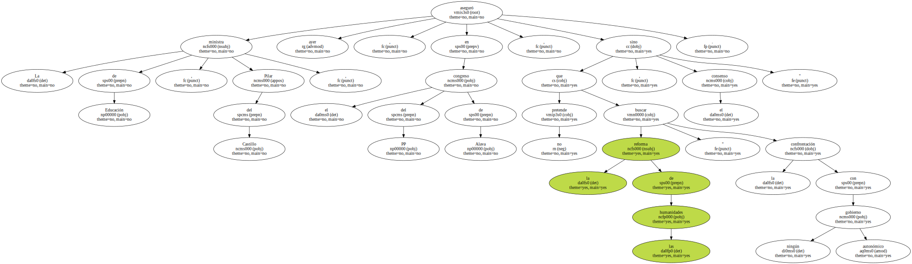
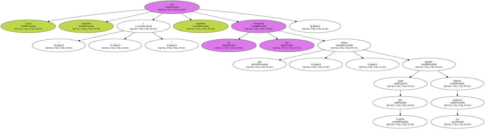
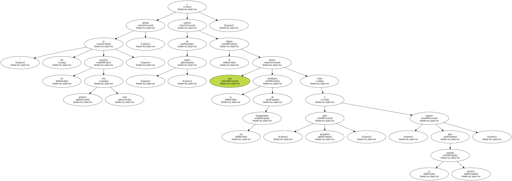

La ministra de Educación , Pilar del Castillo , aseguró ayer , en el congreso del PP de Alava , que la reforma de las humanidades " no pretende buscar la confrontación con ningún gobierno autonómico , sino el consenso ".
En su opinión , esta reforma " goza de un amplio respaldo " en la sociedad y entre el profesorado.

" Calma , serenidad y equilibrio " son los tres elementos que , según Del Castillo , deben presidir tan polémica reforma.
" No es un proyecto político sino vital " , afirmó y calificó de " estéril " el debate que utilice la enseñanza de las humanidades como " arma arrojadiza " o " espacio para la coartada política ".
